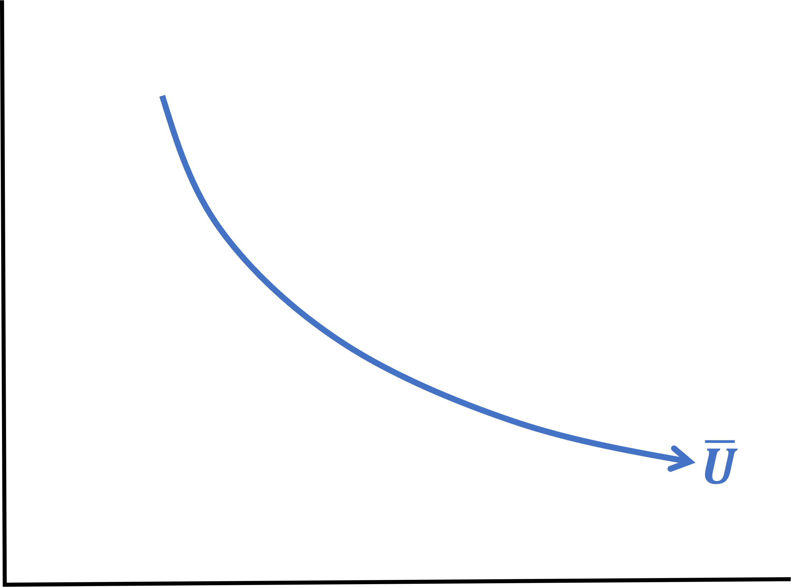
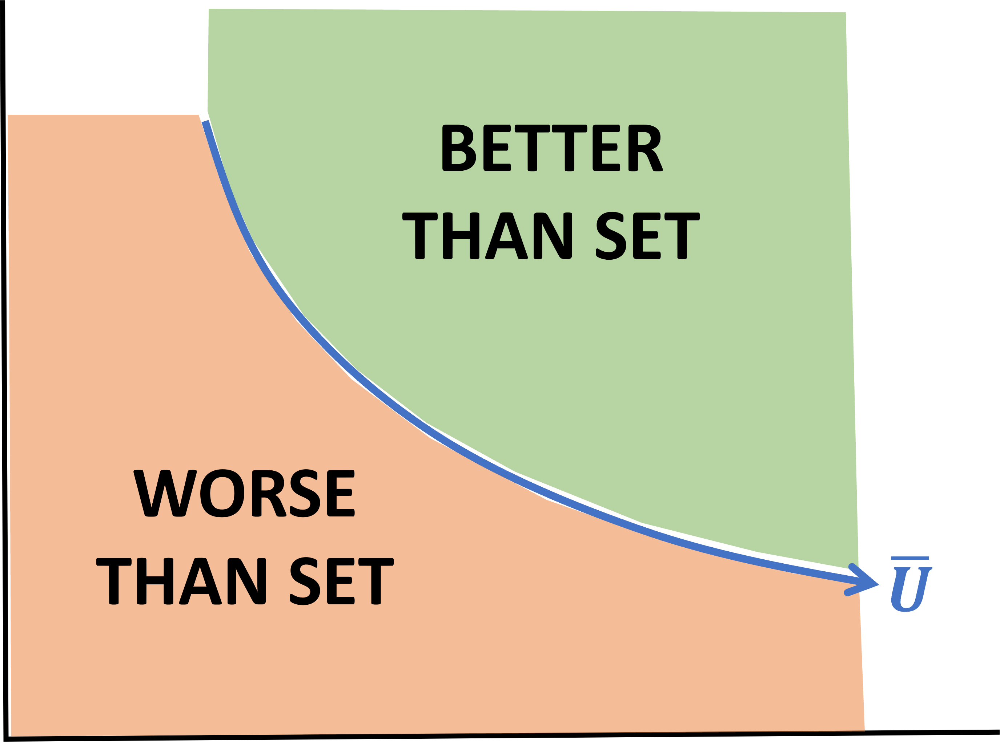
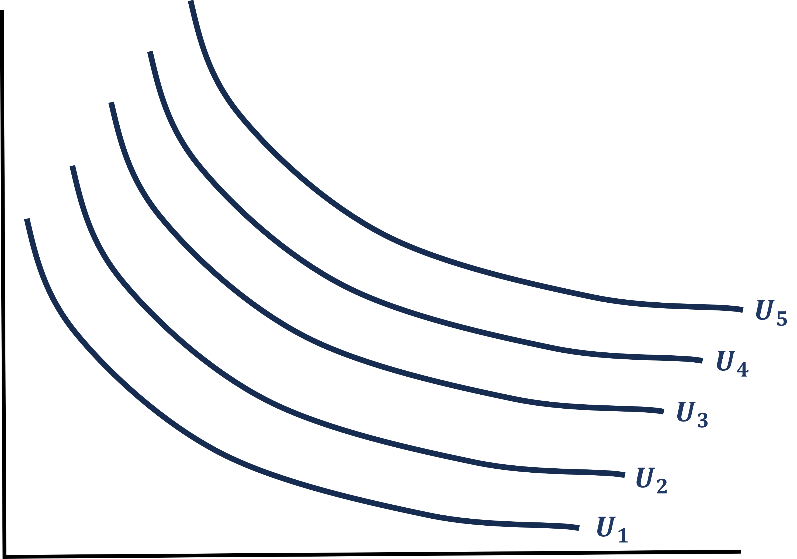
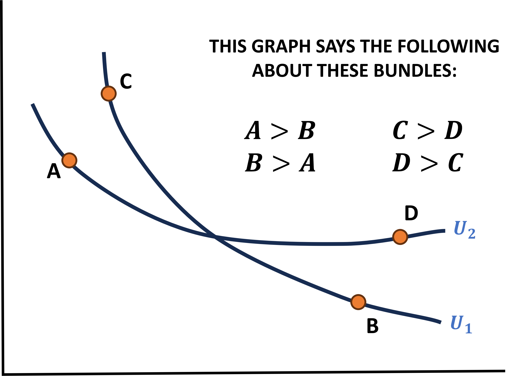
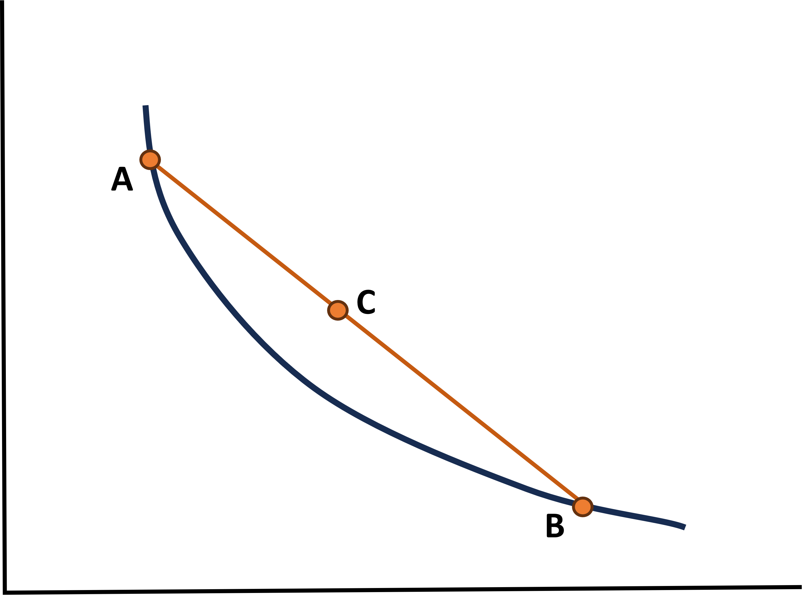
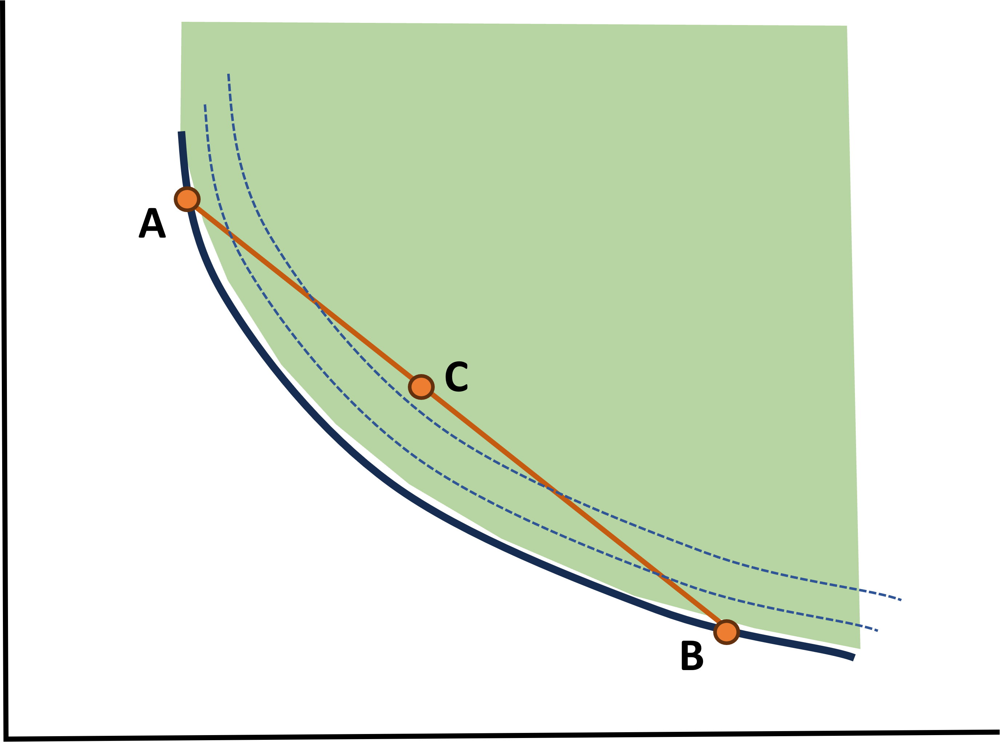

What is Indifference?
It is exactly what it sounds like
- Any two bundles that give the same utility level makes you indifferent between those two Bundles
For example, for the utility of \(U(x,y) = 2x + 3y\) I am indifferent between bundles (3,2) and (0,4)
. . .
\[\begin{align*} U(3,2) &= 2(3) + 3(2) = 6 + 6 = 12 \\ \\ U(0,4) &= 2(0) + 3(4) = 12 \end{align*}\]
Indifference Set
Given a utility function and a level of utility, you can find a whole set of bundles that you are indifferent between
. . .
For example, let \(U(x,y) = x + y\) and set \(U = 10\). Then we can find an infinite set of \(x\) and \(y\) that will give us our stated utility level
. . .
\[\begin{align*} x &= 10 \\ x &= 9 \\ x &= 8 \\ &. \\ &. \\ &. \end{align*}\]
\[\begin{align*} y &= 0 \\ y &= 1 \\ y &= 2 \\ &. \\ &. \\ &. \end{align*}\]
Indifference Curves
We can create a function that helps us find ALL possible bundles that make you indifferent at a given utility level
We call this an Indifference Curve
For our previous utility function \(U(x,y) = x + y\) where \(U = 10\), we solve for \(y\) and get:
. . .
\[\begin{align*} U(x,y) &= x + y \\ \\ 10 &= x + y \\ \\ 10 - x &= y \rightarrow \text{Indifference Curve (IC)} \end{align*}\]
Indifference Curve - Example
\[U(x,y) = xy \;\; \text{where} \; U = 16\]
. . .
What type of Utility Function is this?
. . .
- It is a Cobb-Douglas \(x^{a}y^{b} \text{ where } a = b = 1\)
. . .
What is the associated Indifference Curve?
. . .
\[16 = xy \rightarrow y = \dfrac{16}{x} \rightarrow \text{ IC }\]
Indifference Curves
So why do we care about these curves?
. . .
- We can graph them
. . .
- Graphing is a key step to figuring out how to solve an individual’s choice problem
. . .
Each utility function has a unique shape that we will learn
Let’s Draw - Perfect Substitutes
\[U(x,y) = 3x + y \; \text{ with } \; U = 6, \, 9, \, 15\]
First, find the indifference curves for each Utility value
\[U = 6\]
\[y = 6 - 3x\]
\[U = 9\]
\[y = 9 - 3x\]
\[U = 15\]
\[y = 15 - 3x\]
. . .
Next, we graph these functions
Draw graph on the board
Let’s Draw - Perfect Complements
\[U(x,y) = \min \{ x, \dfrac{y}{2} \} \; \text { with } U = 2, \, 8, \, 9\]
Find the indifference curves for each utility value
\[U = 2\]
\[x = 2 \; \text{ or } y = 4\]
\[U = 8\]
\[x = 8 \; \text{ or } y = 16\]
\[U = 9\]
\[x = 9 \; \text{ or } y = 18\]
. . .
Next, we graph these functions
Draw graph on the board
Let’s Draw - Cobb-Douglas
\[U(x,y) = x^{1/2}y \; \text{ with } U = 4, \, 8, \, 10\]
Find the indifference curves for each utility value
\[U = 4\]
\[y = \dfrac{4}{x^{1/2}}\]
\[U = 8\]
\[y = \dfrac{8}{x^{1/2}}\]
\[U = 10\]
\[y = \dfrac{10}{x^{1/2}}\]
. . .
Next, we graph these functions
Draw graph on the board
Let’s Draw - Quasi-Linear
\[U(x,y) = ln(x) + y \; \text{ with } U = 5, \, 15, \, 20\]
Find the indifference curves for each utility value
\[U = 5\]
\[y = 5 - ln(x)\]
\[U = 15\]
\[y = 15 - ln(x)\]
\[U = 20\]
\[y = 20 - ln(x)\]
. . .
Next, we graph these functions
Draw graph on the board
Indifference Curve - Rules
It is very important that you understand the intuition behind indifference curves
Let’s view an example that can help:
. . .
Consider Weather Reports:
On cold days, what the weather feels like is a function of:
Temperature
Windchill
. . .
- An indifference curve represents all of the different combinations of temperature and windchill that cause you to feel the exact same thing
. . .
- If the windchill is suddenly lower, what must intuitively happen to the temperature to keep you feeling the same outside?
. . .
If windchill \(\downarrow\) then temperature \(\uparrow\)
Indifference Curve - Rules
We use this exact same logic for utility between two goods
Intuitively, if I want to stay at the same level of happiness as I lose some \(y\), what must happen to \(x\)?
. . .
- I need more of \(x\)
. . .
This is why we read them from left to right and why they have a negative slope
- I know the perfect complements is odd but the same logic tends to apply
Formal Indifference Curve Rules
All of the stuff from before can be formalized into the following 3:
. . .
- Monotonicity: Indifference curves always go from the top left to the bottom right of the graph without changing direction at any point
. . .
- Non-Crossing: If at least two curves cross, this leads to logical contradictions
. . .
- Convex: Balanced combinations of two goods are preferred to extreme outcomes (A lot of one good, little of the other)
Monotonicity
ICs always go from the top left to the bottom right without changing direction

Drawing on whiteboard to show how I made it
Monotonicity
Additionally, this helps us visualize two important sets of bundles

Drawing on whiteboard to show how I made it
Non-Crossing
This is the expected behavior of ICs. There are infinitely many, each representing a unique level of Utility

Drawing on whiteboard to show how I made it
Non-Crossing - Logical Contradiction
If ICs cross, they are contradictions

Drawing on whiteboard to show how I made it
Convex
A balanced combination of two goods are preferred to extreme outcomes

Drawing on whiteboard to show how I made it
Convex
Recall the Better-than-set

Drawing on whiteboard to show how I made it
What About the Other Functional Forms?
I drew Cobb-Douglas curves (mostly because they’re easier to illustrate these properties) but what about Perfect Complements or Perfect Substitutes?
. . .
- They fulfill all 3 properties, but not strongly
. . .
Perfect Complements
- Never Crosses
- Convex
- Wealky Monotonic
Perfect Substitutes
- Never Crosses
- Monotonic
- Weakly Convex
. . .
Let’s look at the board again
Most Important Facts of Indifference Curves
Recall the intuition of what a movement along the indifference curve means:
. . .
- You are trading \(y\) for \(x\), holding constant your level of utility
. . .
- The slope of the indifference curve measures your willingness to tradeoff between \(x\) and \(y\)
. . .
- This is also known as the Marginal Rate of Substition (times \(-1\))
Most Important Facts of Indifference Curves
This Marginal Rate of Substition (MRS) thing is pretty important
First, why is the slope the negative MRS?
. . .
- The MRS is the ratio of the effect of increasing \(x\) on your utility and the effect of increasing \(y\) on your utility
. . .
- \(\dfrac{MU_{x}}{MU_{y}}\)
. . .
The Indifference Curve slope is all about keeping the utility level constant while we move \(x\) and \(y\) in opposite directions
Therefore the IC slope = -MRS
Simple Mathematical Proof
For
\[U(x,y) = ax + by\]
. . .
- Find the MRS and times -1
\[\begin{align*} MRS &= \dfrac{MU_{x}}{MU_{y}} = \dfrac{a}{b} \\ -MRS &= \dfrac{-a}{b} \end{align*}\]
- Find the IC and it’s slope
\[\begin{align*} \bar{U} &= ax + by \\ \bar{U} - ax &= by \\ \dfrac{\bar{U}}{b} - \dfrac{ax}{b} &= y \end{align*}\]
. . .
\[\text{Slope is the derivative! } \rightarrow \;\; \dfrac{\partial y}{\partial x} = \dfrac{-a}{b}\]
Indifference Curves
From this lecture you have learned:
Everything about utility functions and how to use them to find an MRS
Everything about Indifference Curves and how the IC slope relates to the MRS
. . .
The MRS is going to be key to solving utility maximization problems
Mathematically (Using derivatives)
Graphically (Drawing ICs)
. . .
However, when we maximize utility functions we have constraints, we called these Budget Constraints